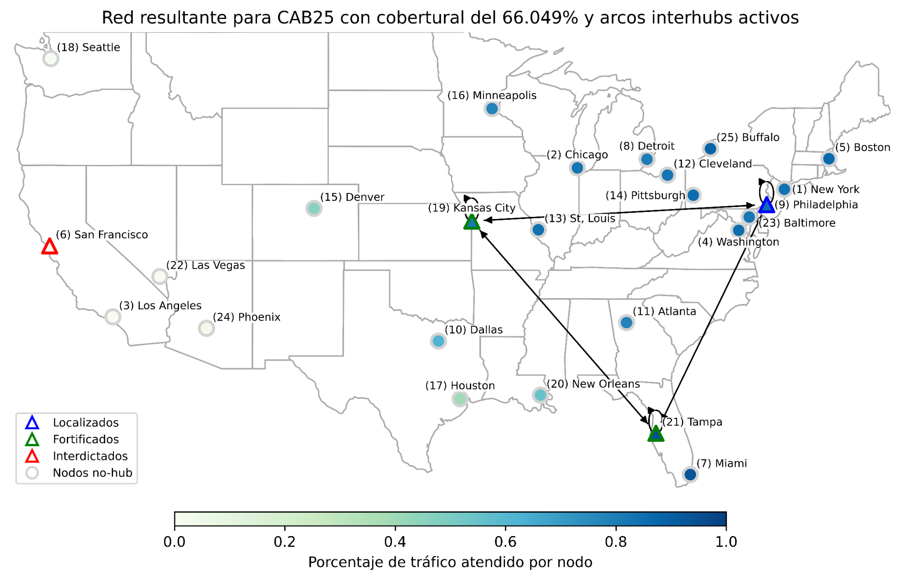
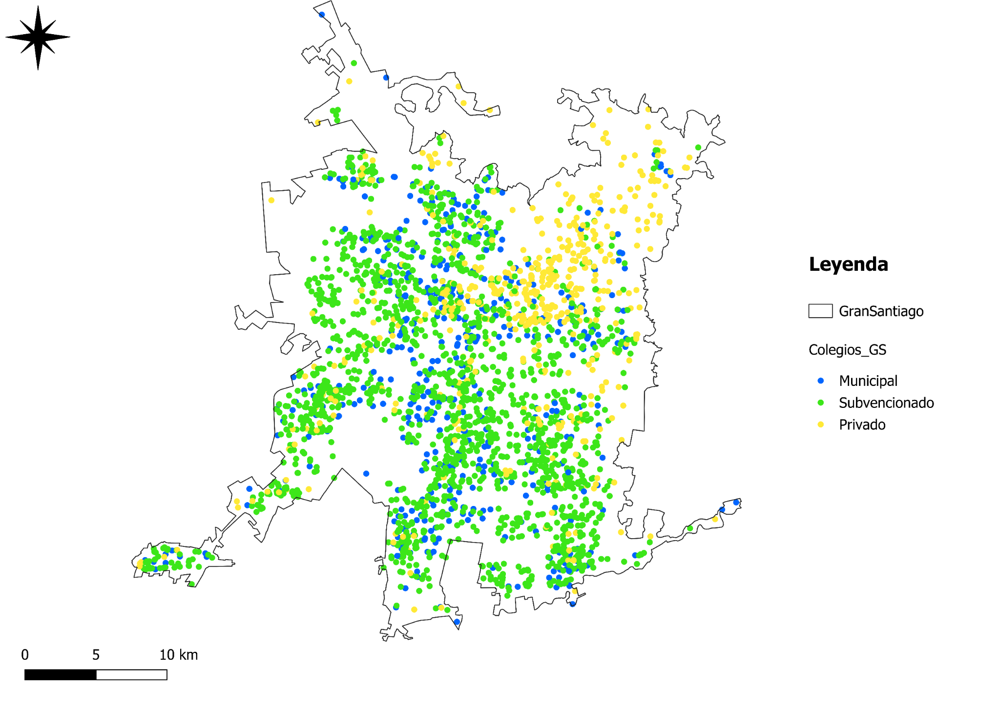
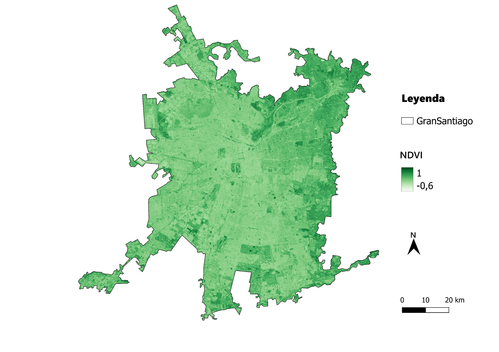
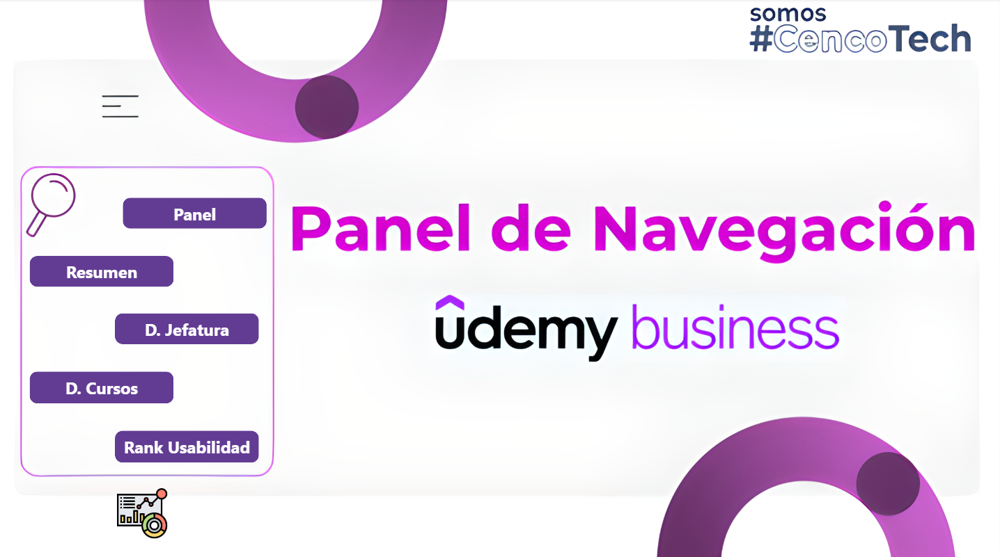
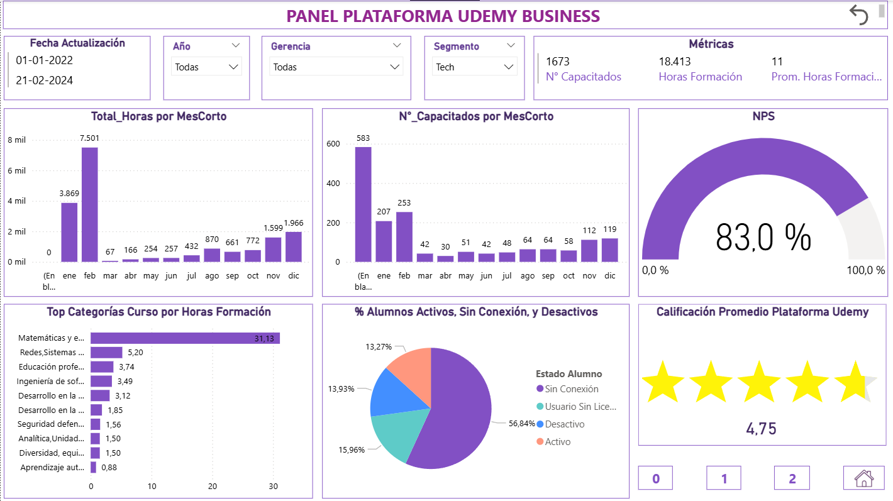
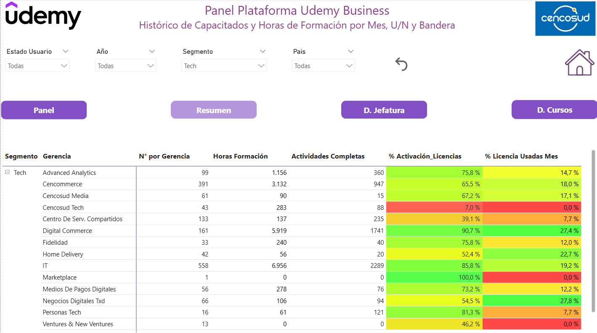

Sobre mí
Soy analista de datos e ingeniero con especialización en optimización de sistemas y análisis cuantitativo.
Combino la analítica avanzada con la visión estratégica para diseñar soluciones sostenibles y basadas en evidencia.
Manejo avanzado de Python, R, SQL, Power BI y experiencia en modelación matemática y visualización geoespacial
con Gurobi, CPLEX y QGIS.
Mi objetivo es seguir desarrollando proyectos que integren datos, optimización y sostenibilidad, contribuyendo al desarrollo científico y empresarial del país.
Proyectos
1️⃣ Localización y Fortificación de Hubs Post-Disrupción
Descripción: Modelo de optimización binivel para decidir la ubicación y fortificación de hubs aéreos ante disrupciones.
Objetivo: Maximizar la cobertura de red post-evento considerando decisiones del líder y del atacante.
Tecnologías: Python, Gurobi, NetworkX, Matplotlib.
Reflexión: Este proyecto consolidó mis competencias en optimización combinatoria y análisis de resiliencia de redes.

2️⃣ Asociación entre Vegetación Escolar y Asistencia Estudiantil
Descripción: Estudio transversal que analiza la relación entre el verdor urbano (NDVI) y la asistencia de estudiantes de enseñanza básica en Santiago.
Objetivo: Evaluar el impacto ambiental en la asistencia escolar para promover entornos más saludables.
Tecnologías: R, QGIS, Python (GeoPandas), análisis estadístico y espacial.
Reflexión: Fortalecí mis habilidades en análisis geoespacial y uso de datos abiertos en educación.


3️⃣ Panel de Control – Udemy Business (Cencosud S.A.)
Descripción: Desarrollo de paneles interactivos para analizar el uso de la plataforma Udemy Business a nivel regional.
Objetivo: Optimizar la gestión de licencias y medir la efectividad de los programas de formación.
Tecnologías: Power BI, SQL, Excel, integración con fuentes en la nube.
Reflexión: Integré análisis de datos con visualización estratégica y comunicación efectiva con stakeholders.


